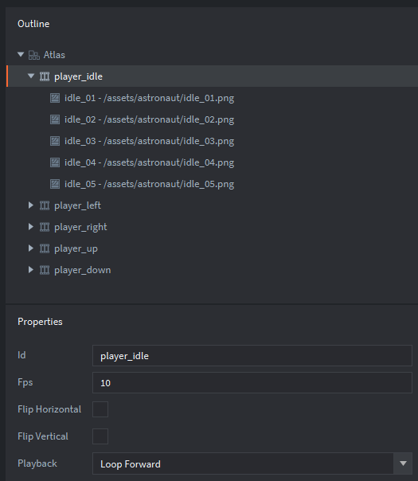
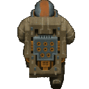
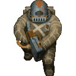
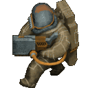
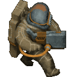
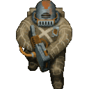
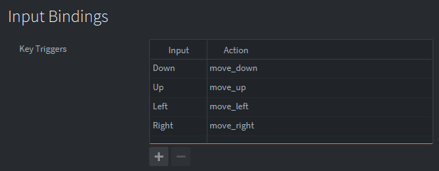

Tutorials for 2D games projects
Animation

Create a new animation set in an atlas and add the images. Set the Id property of each animation set to something suitable that describes the animation to make the code readable. In this example we have five animation sets named: player_idle, player_left, player_right, player_up and player_down. Each animation set includes five images.The properties for the animation set determine its behaviour:
- Id is the name of the animation you will refer to in the code.
- Fps is how fast the animation plays. There is currently no way to change this in code.
- Flip Horizontal and Flip Vertical can be used to change the direction of the sprite being animated. This is useful if you want walking animations to be different for both left and right but only want to use one set of images.
- Playback controls the direction the animation is played. There are lots of different options here.
In this example we will use different animations for moving up, down, left and right, plus an idle animation when the character is not moving. When a key is pressed the character animates with the appropriate animation set. When no key is pressed the character defaults to the idle animation.





The input bindings have been set in the game.input_binding file in the assets panel as follows:

Script for the character:
local speed = 250
-- Input bindings
local move_left = hash("move_left")
local move_right = hash("move_right")
local move_up = hash("move_up")
local move_down = hash("move_down")
-- Animation sets
local animation_idle = hash("player_idle")
local animation_up = hash("player_up")
local animation_down = hash("player_down")
local animation_left = hash("player_left")
local animation_right = hash("player_right")
function init(self)
msg.post(".", "acquire_input_focus")
self.direction = vmath.vector3()
self.current_animation = nil
end
function update(self, dt)
-- handle diagonal movement
if vmath.length_sqr(self.direction) > 1 then
self.direction = vmath.normalize(self.direction)
end
-- update player position
local position = go.get_position()
go.set_position(position + self.direction * speed * dt)
-- animate the player
local animation = animation_idle
if self.direction.x > 0 then
animation = animation_right
elseif self.direction.x < 0 then
animation = animation_left
elseif self.direction.y > 0 then
animation = animation_up
elseif self.direction.y < 0 then
animation = animation_down
end
-- reset animation only if new direction started
if animation ~= self.current_animation then
msg.post("#sprite", "play_animation", { id = animation })
self.current_animation = animation
end
self.direction = vmath.vector3()
end
function on_input(self, action_id, action)
-- Set direction based on input
if action_id == move_down then
self.direction.y = -1
elseif action_id == move_up then
self.direction.y = 1
elseif action_id == move_left then
self.direction.x = -1
elseif action_id == move_right then
self.direction.x = 1
end
end
speed is a variable that determines the speed of the character.
It is generally considered to be good practice to pre-hash and store the integers in constants instead of using the hash command for every update and input. This would give you a performance increase as it requires additional computation to calculate the hash of a string. It is better to only calculate the hashing algorithm once.
move_left is a constant holding the hash of the input binding action move_left.
animation_idle is a constant holding the hash of the animation Id player_idle.
In the init function the script aquires the input focus. It sets the direction to be a vector3 and the current_animation to be nil. Initialising these variables will prevent the update function crashing on the first update before these values are set.
When moving diagonally the length of the movement will be greater than 1. Normalising the vector will ensure that diagonal movement is the same distance as horizontal and vertical movement.
The player's position is updated to be the current position plus the direction vector multipled by the speed and delta time to ensure a consistent movement speed between different processors.
The animation variable is set according to the direction.
The animation is changed if it is a different animation than the one currently playing. The critical line of code to change the animation is:
msg.post("#sprite", "play_animation", { id = animation })
This assumes the sprite is called "sprite".
The direction is set as a vector3.
When a key is pressed the direction is changed. Using increments of 1 keeps the code really simple. We can then multiply this value by the speed to determine the number of pixels to actually move.
 Craig'n'Dave | Version 1.3
Craig'n'Dave | Version 1.3